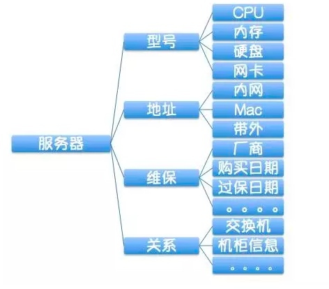
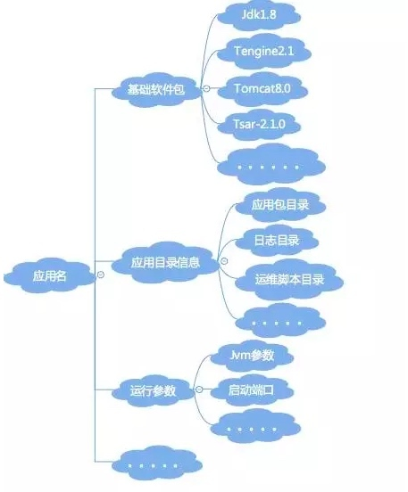
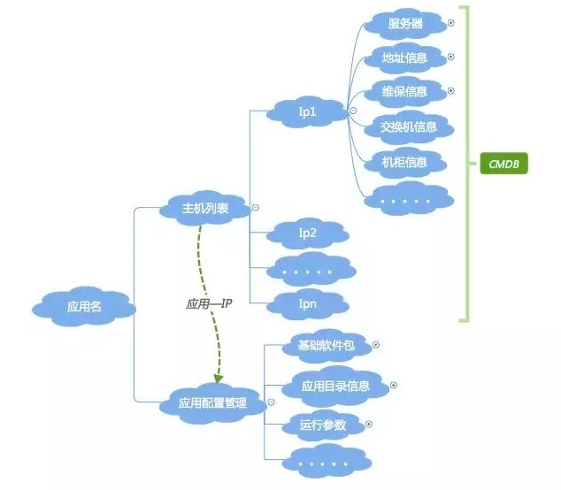

- 00 开篇词 带给你不一样的运维思考.md
- 01 为什么Netflix没有运维岗位？.md
- 02 微服务架构时代，运维体系建设为什么要以应用为核心？.md
- 03 标准化体系建设（上）：如何建立应用标准化体系和模型？.md
- 04 标准化体系建设（下）：如何建立基础架构标准化及服务化体系？.md
- 05 如何从生命周期的视角看待应用运维体系建设？.md
- 06 聊聊CMDB的前世今生.md
- 07 有了CMDB，为什么还需要应用配置管理？.md
- 08 如何在CMDB中落地应用的概念？.md
- 09 如何打造运维组织架构？.md
- 10 谷歌SRE运维模式解读.md
- 11 从谷歌CRE谈起，运维如何培养服务意识？.md
- 12 持续交付知易行难，想做成这事你要理解这几个关键点.md
- 13 持续交付的第一关键点：配置管理.md
- 14 如何做好持续交付中的多环境配置管理？.md
- 15 开发和测试争抢环境？是时候进行多环境建设了.md
- 16 线上环境建设，要扛得住真刀真枪的考验.md
- 17 人多力量大vs.两个披萨原则，聊聊持续交付中的流水线模式.md
- 18 持续交付流水线软件构建难吗？有哪些关键问题？.md
- 19 持续交付中流水线构建完成后就大功告成了吗？别忘了质量保障.md
- 20 做持续交付概念重要还是场景重要？看笨办法如何找到最佳方案.md
- 21 极端业务场景下，我们应该如何做好稳定性保障？.md
- 22 稳定性实践：容量规划之业务场景分析.md
- 23 稳定性实践：容量规划之压测系统建设.md
- 24 稳定性实践：限流降级.md
- 25 稳定性实践：开关和预案.md
- 26 稳定性实践：全链路跟踪系统，技术运营能力的体现.md
- 27 故障管理：谈谈我对故障的理解.md
- 28 故障管理：故障定级和定责.md
- 29 故障管理：鼓励做事，而不是处罚错误.md
- 30 故障管理：故障应急和故障复盘.md
- 31 唇亡齿寒，运维与安全.md
- 32 为什么蘑菇街会选择上云？是被动选择还是主动出击？.md
- 33 为什么混合云是未来云计算的主流形态？.md
- 35 以绝对优势立足：从CDN和云存储来聊聊云生态的崛起.md
- 36 量体裁衣方得最优解：聊聊页面静态化架构和二级CDN建设.md
- 37 云计算时代，我们所说的弹性伸缩，弹的到底是什么？.md
- 38 我是如何走上运维岗位的？.md
- 39 云计算和AI时代，运维应该如何做好转型？.md
- 40 运维需要懂产品和运营吗？.md
- 41 冷静下来想想，员工离职这事真能防得住吗？.md
- 42 树立个人品牌意识：从背景调查谈谈职业口碑的重要性.md
- 划重点：赵成的运维体系管理课精华（一）.md
- 划重点：赵成的运维体系管理课精华（三）.md
- 划重点：赵成的运维体系管理课精华（二）.md
- 新书 《进化：运维技术变革与实践探索》.md
- 特别放送 我的2019：收获，静静等待.md
- 结束语 学习的过程，多些耐心和脚踏实地.md
07 有了CMDB，为什么还需要应用配置管理？
今天我们分享的主题是：有了CMDB，为什么还需要应用配置管理？
你不妨先停下来，思考一下这个问题。
我抛出的观点是： CMDB是面向资源的管理，应用配置是面向应用的管理。
请注意，这里是面向“资源”，不是面向“资产”，资源 ≠资产。
CMDB是面向资源的管理，是运维的基石
我们一起来梳理一下，在建设运维的基础管理平台时通常要做的事情。
- 第1步，把服务器、网络、IDC、机柜、存储、配件等这几大维度先定下来；
- 第2步，把这些硬件的属性确定下来，比如服务器就会有SN序列号、IP地址、厂商、硬件配置（如CPU、内存、硬盘、网卡、PCIE、BIOS）、维保信息等等；网络设备如交换机也会有厂商、型号、带宽等等；
- 第3步，梳理以上信息之间的关联关系，或者叫拓扑关系。比如服务器所在机柜，虚拟机所在的宿主机、机柜所在IDC等简单关系；复杂一点就会有核心交换机、汇聚交换机、接入交换机以及机柜和服务器之间的级联关系；
- 第3.5步，在上面信息的梳理过程中肯定就会遇到一些规划问题，比如，IP地址段的规划，哪个网段用于DB，哪个网段用于大数据、哪个网段用于业务应用等等，再比如同步要做的还有哪些机柜用于做虚拟化宿主机、哪些机柜只放DB机器等。
以上信息梳理清楚，通过ER建模工具进行数据建模，再将以上的信息固化到DB中，一个资源层面的信息管理平台就基本成型了。
但是，信息固化不是目的，也没有价值，只有信息动态流转起来才有价值（跟货币一样）。接下来我们可以做的事情：
- 第4步，基于这些信息进行流程规范的建设，比如服务器的上线、下线、维修、装机等流程。同时，流程过程中状态的变更要同步管理起来；
- 第5步，拓扑关系的可视化和动态展示，比如交换机与服务器之间的级联关系、状态（正常or故障）的展示等，这样可以很直观地关注到资源节点的状态。
至此，从资源维度的信息梳理，以及基于这些信息的平台和流程规范建设就算是基本成型了。这个时候，以服务器简单示例，我们的视角是下面这样的： 

应用配置管理是面向应用的管理，是运维的核心
上面说明了CMDB的基础信息部分，如果从传统的SA运维模式，这些信息已经足够，但是从应用运维的角度，这些就远远不够了。
这时我们就需要一个非常非常重要的句柄：应用名，或者叫应用标识。至此，应用运维里面最最重要的一条联系也就产生了：“应用名-IP“的关联关系（这里也可以是定义的其它唯一主机标识，如主机名、容器ID等等，因为我们使用的方式是IP，所以这里就以IP示例）。
之所以说“应用名”和“应用名-IP关联关系”非常重要，是因为它的影响力不仅仅在运维内部，而是会一直延伸到整个技术架构上。后面我们会介绍到的所有平台和系统建设，都跟这两个概念有关。
CMDB是IP为标识的资源管理维度，有了应用名之后，就是以应用为视角的管理维度了。首先看一下应用会涉及到的信息：
- 应用基础信息，如应用责任人、应用的Git地址等；
- 应用部署涉及的基础软件包，如语言包（Java、C++、GO等）、Web容器（Tomcat、JBoss等）、Web服务器（Apache、Nginx等）、基础组件（各种agent，如日志、监控、系统维护类的tsar等）；
- 应用部署涉及的目录，如运维脚本目录、日志目录、应用包目录、临时目录等；
- 应用运行涉及的各项脚本和命令，如启停脚本、健康监测脚本；
- 应用运行时的参数配置，如Java的jvm参数，特别重要的是GC方式、新生代、老生代、永生代的堆内存大小配置等；
- 应用运行的端口号；
- 应用日志的输出规范；
- 其他。
上面的梳理过程实际就是标准化的过程。我们梳理完上述信息后就会发现，这些信息跟CMDB里面的资源信息完全是两个维度的东西。所以从信息管理维度上讲，把资源配置和应用配置分开会更清晰，解耦之后也更容易管理。
好了，按照上面CMDB说的套路，梳理完成后，就是要进行信息的建模和数据的固化，这时就有了我们的“应用配置管理”。再往后，就是基于应用配置管理的流程规范和工具平台的建设，这就涉及到我们经常说的持续集成和发布、持续交付、监控、稳定性平台、成本管理等等。
从应用的视角，我们配置管理，应该是下面这样一个视图（简单示例，不是完整的）：

 好了，有了资源配置信息和应用配置信息，这两个信息应该怎么统一管理起来呢。直接看图：
至此，CMDB和应用配置管理的分层分解就完成了，应用名关联着应用配置信息，IP关联着资源信息，二者通过“应用名-IP”的对应关系，联系到一起。
总结
CMDB是运维的基石，但是要发挥出更大的价值，只有基础是不够的，我们要把更多的精力放到上层的应用和价值服务上，所以我们说应用才是运维的核心。
你可以看到，如果仅仅基于CMDB的资源信息作自动化，最多只能做出自动化的硬件资源采集、自动化装机、网络-硬件拓扑关系生成等资源层面的工具，这些工具只会在运维层面产生价值，离业务还很远，就更谈不上给业务带来价值了。
但是基于应用这一层去做，就可以做很多事情，比如持续集成和发布、持续交付、弹性扩缩容、稳定性平台、成本控制等等，做这些事情带来的价值就会大大不同。
以上就是我抛出的观点，CMDB是面向资源的管理，应用配置是面向应用的管理。希望能够抛砖引玉，听到更多你的观点和反馈。
如果今天的内容对你有用，也希望你分享给身边的朋友，我们下期见！
© 2019 - 2023 Liangliang Lee. Powered by gin and hexo-theme-book.